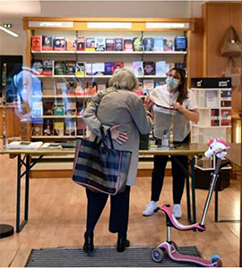

Opinions
Comment les librairies préparent leur réouverture le 11 mai
La France compte environ 3 000 librairies indépendantes. PHOTO AFP
Trois clés pour comprendre
1. Une économie déjà souvent fragile
Les librairies font partie des commerces les plus affectés par les mesures de confinement entrées en vigueur le 17 mars : leur économie est déjà, en temps normal, fragile. Mi-avril, les ventes de livres ne se situaient plus qu'à un tiers de leur niveau de 2019, selon une étude de l'institut GfK publiée par le magazine professionnel " Livres Hebdo ". Du 16 mars au 12 avril, les ventes ont chuté de 68 % par rapport à l'an dernier, tous circuits confondus : grande distribution, maisons de la presse, Internet.... Mais elles ont souvent été anéanties pour les 3 000 librairies indépendantes. " Nous ne retrouverons pas en fin d'année le chiffre que nous perdons en ce moment ", a récemment estimé Xavier Moni, le président du syndicat des libraires.